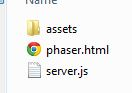

Open command line and type "node -v" to see.
var http = require('http'),
fs = require('fs'),
url = require('url'),
phaser = fs.readFileSync('phaser.html');
http.createServer(function (req, res) {
var action = url.parse(req.url, true).pathname;
if( action.indexOf(".png") > 0) {
var img = fs.readFileSync("." + action);
res.writeHead(200, {'Content-Type': "image/png"});
res.end(img, 'binary');
} else {
res.writeHead(200, {'Content-Type': 'text/html'});
res.end(phaser);
}
}).listen(1337);
console.log('Server running at localhost:1337/');
<!doctype html>
<html>
<head>
<title>My Phaser Game</title>
</head>
<body>
<h1>Welcome to the World of Phaser!</h1>
</body>
</html>
Click here to download "assets" folder. 
node server.js
Every time you save your html file, you'll need to re-run step 5 before refreshing